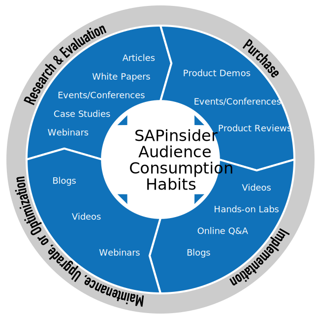

Understanding what channels SAP professionals use throughout the project life cycle is critical in connecting with them throughout their journey.

Creating a marketing program that leverages a variety of channels ensures you keep prospects engaged. To get started, align your marketing objectives with our marketing solutions.